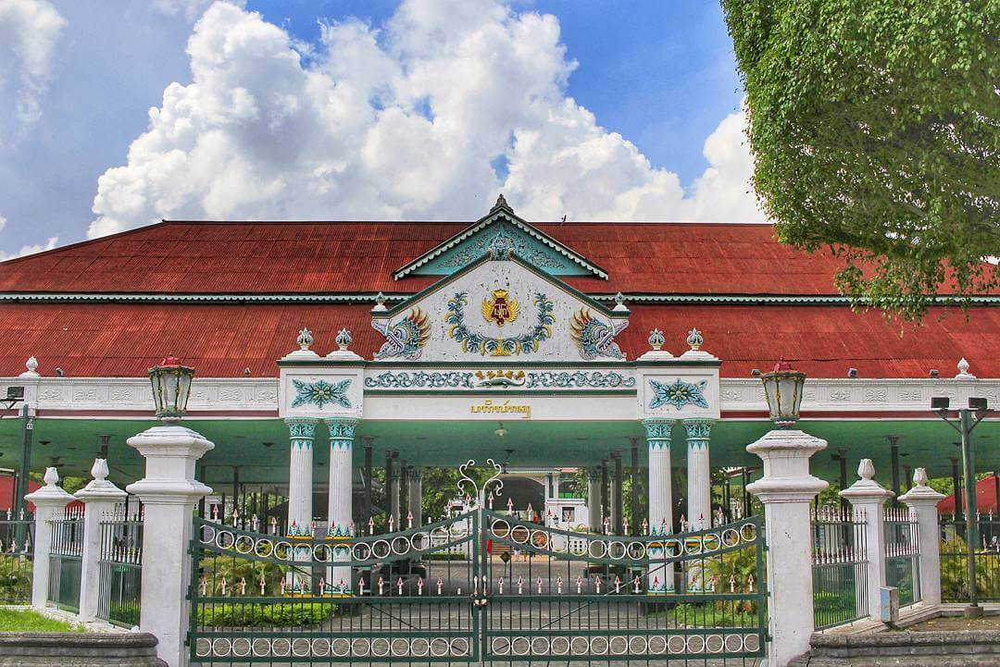
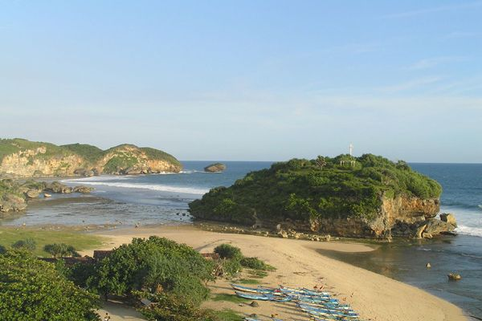
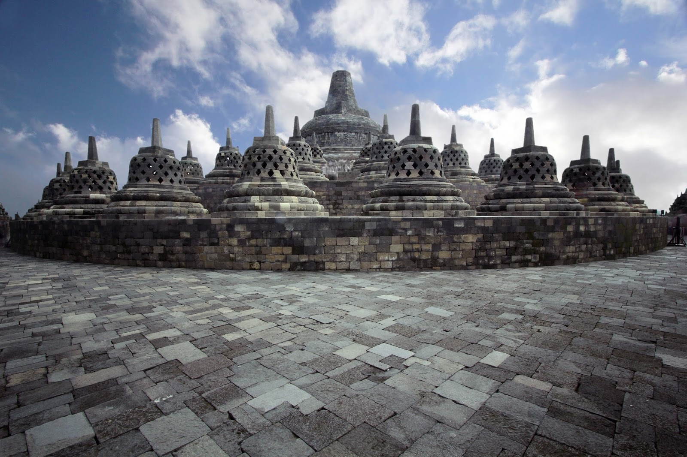

Sejarah

Berdirinya Kota Yogyakarta berawal dari adanya Perjanjian Gianti
pada Tanggal 13 Februari 1755 yang ditandatangani Kompeni Belanda di
bawah tanda tangan Gubernur Nicholas Hartingh atas nama Gubernur
Jendral Jacob Mossel. Isi Perjanjian Gianti : Negara Mataram dibagi
dua : Setengah masih menjadi Hak Kerajaan Surakarta, setengah lagi
menjadi Hak Pangeran Mangkubumi. Dalam perjanjian itu pula Pengeran
Mangkubumi diakui menjadi Raja atas setengah daerah Pedalaman
Kerajaan Jawa dengan Gelar Sultan Hamengku Buwono Senopati Ing Alega
Abdul Rachman Sayidin Panatagama Khalifatullah. Adapun daerah-daerah
yang menjadi kekuasaannya adalah Mataram (Yogyakarta), Pojong,
Sukowati, Bagelen, Kedu, Bumigede dan ditambah daerah mancanegara
yaitu; Madiun, Magetan, Cirebon, Separuh Pacitan, Kartosuro,
Kalangbret, Tulungagung, Mojokerto, Bojonegoro, Ngawen, Sela, Kuwu,
Wonosari, Grobogan.
Setelah selesai Perjanjian Pembagian Daerah itu, Pengeran Mangkubumi
yang bergelar Sultan Hamengku Buwono I segera menetapkan bahwa
Daerah Mataram yang ada di dalam kekuasaannya itu diberi nama
Ngayogyakarta Hadiningrat dan beribukota di Ngayogyakarta
(Yogyakarta). Ketetapan ini diumumkan pada tanggal 13 Maret 1755.
Tempat yang dipilih menjadi ibukota dan pusat pemerintahan ini ialah
Hutan yang disebut Beringin, dimana telah ada sebuah desa kecil
bernama Pachetokan, sedang disana terdapat suatu pesanggrahan
dinamai Garjitowati, yang dibuat oleh Susuhunan Paku Buwono II dulu
dan namanya kemudian diubah menjadi Ayodya. Setelah penetapan
tersebut diatas diumumkan, Sultan Hamengku Buwono segera
memerintahkan kepada rakyat membabad hutan tadi untuk didirikan
Kraton.
Geografis

Geografis di Propinsi Daerah Istimewa Yogyakarta dapat ditinjau dari
kondisi geografi, iklim, geologi, gomorfologi, jenis tanah, dan
hidrologi daerah. Kondisi geografi daerah menerangkan tentang posisi
spasial daerah dalam kaitannya dengan daerah lain yang ada di
sekitarnya, baik dalam hal luas wilayah, batas-batas wilayah, maupun
batas-batas potensi sumberdaya alam kewilayahan. Penggambaran
kondisi geografi daerah dilakukan baik dengan deskripsi tulisan
maupun melalui presentasi peta wilayah. Kondisi iklim suatu potensi
sangat berpengaruh pada potensi daerah bersangkutan, baik dalam
potensi sumberdaya alam maupun dalam potensi kebencanaan alam.
Deskripsi klimatologis Propinsi Daerah Istimewa Yogyakarta yang
diuraikan berupa curah hujan dan suhu udara. Kedua parameter iklim
ini sangat berpengaruh pada potensi pengembangan sumberdaya alam,
baik dilihat sebagai potensi cadangan alamiah maupun potensi alam
berkesinambungan. Curah hujan sebagai input air ke permukaan bumi
membawa akibat pada variasi potensi hidrologi daerah bersangkutan,
sehingga uraian hidrologi daerah tidak boleh dipisahkan dengan
kondisi klimatologisnya, terutama dengan curah hujan. Air hujan yang
jatuh ke permukaan bumi akan mengalami proses-proses evaporasi
(kembali ke atmosfer sebagai uap air), infiltrasi (menjadi air
tanah), dan genangan/limpasan (sebagai air permukaan).
Potensi airtanah dan keberadaan air permukaan satu daerah tidak sama
dengan daerah lainnya walaupun keduanya mempunyai curah hujan yang
sama. Hal ini disebabkan kondisi lahan (geologi, geomorfologi, dan
tanah) setiap daerah berbeda. Perbedaan-perbedaan ini akhirnya
membawa keberagaman dalam potensi sumberdaya alam dan potensi
kebencanaan alam sehingga antara pengembangan sumberdaya alam daerah
harus memperhatikan potensi-potensi alam tersebut. Pengembangan
suatu potensi sumberdaya alam harus memperhatikan sifat dari
sumberdaya yang akan dikembangkan, yaitu apakah sumberdaya alam
tersebut berupa cadangan (tak terbaharui, misalnya tambang
mineral/batuan) atau sebagai sumberdaya alam yang terbaharui
(terbaharui, misalnya biota). Dengan kata lain, pengembangan
sumberdaya alam harus memperhatikan kesinambungan pemanfaatan dan
kelestarian lingkungan. Kekeliruan pengembangan sumberdaya alam
selain berdampak pada degradasi sumberdaya alam bersangkutan juga
berperan dalam memicu terjadinya bencana alam yang berakibat sangat
merugikan.
Maps Jogyakarta
Wisata
Yogyakarta, sering disingkat sebagai Jogja, adalah sebuah kota di
Pulau Jawa, Indonesia, yang terkenal dengan kekayaan budaya,
sejarah, dan keindahan alamnya. Berikut beberapa tempat wisata yang
populer di Jogja.
Candi Borobudur

Berdasarkan prasasti Karangtengah, diperkirakan Candi Borobudur
dibangun oleh Raja Samaratungga dari Wangsa Syailendra dan baru
diselesaikan putrinya, Ratu Pramudawardhani, pada abad ke-9.
Sedikit yang diketahui tentang hal lainnya, termasuk siapa arsitek
bangunan yang tersusun dari 2 juta balok (55.000 m3) batuan
andesit yang saling mengunci bagaikan sebuah puzzle raksasa ini.
Sebuah legenda Jawa bercerita tentang Gunadarma yang berbaring
memandang Candi Borobudur sampai tertidur dan tubuhnya berubah
menjadi perbukitan Menoreh. Gunadarma kemudian dianggap sebagai
arsitek Candi Borobudur meskipun tidak ada prasasti bersejarah
tentang hal itu.
Terletak sekitar 40 km di sebelah barat Yogyakarta, Candi
Borobudur adalah salah satu candi Buddha terbesar di dunia dan
menjadi Situs Warisan Dunia UNESCO. Candi ini menawarkan
pemandangan yang menakjubkan, terutama saat matahari terbit.
JL.Malioboro

Jalan Malioboro adalah jalan utama di pusat kota Yogyakarta yang
terkenal dengan keramaian, toko-toko, restoran, dan seniman
jalanan. Pengunjung dapat menemukan berbagai jenis barang, mulai
dari batik hingga kuliner khas Yogyakarta.
Tugu Jogyakarta

Tugu Yogyakarta adalah salah satu area ikonik lainnya di Jogja
yang enggak boleh dilewatkan wisatawan, apalagi kalau baru pertama
kali liburan ke Jogja. Umumnya, Tugu Yogyakarta adalah tempat
berfoto yang wajib dikunjungi untuk membuktikan kalau kamu beneran
udah ke Jogja! Berfoto dengan latar belakang Tugu memang agak
tricky, tapi Klook bisa kasih tipsnya ke kamu: kamu bisa berfoto
dari pinggir jalan seberangnya - dengan timing yang bagus, kamu
akan bisa mendapatkan foto yang ciamik! Cara lainnya adalah dengan
mampir ke restoran dan kafe yang terletak tepat di seberang Tugu.
Biasanya restoran ini punya teras lantai 2, dan kamu bisa berfoto
dari atas sana! Tentu aja kamu harus beli makanan dan minuman dulu
ya di sini, jangan langsung masuk dan berfoto gitu aja.
Tugu Yogyakarta. Waktu Buka: Setiap hari, 09.00-15.00 WIB Tiket
Masuk: Mulai dari Rp 5.000 untuk wisatawan domestik